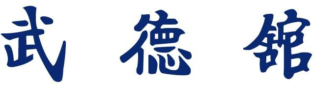

La Moo Duk Kwan (escuela de la virtud marcial) es una escuela de artes marciales fundada por el Gran Maestro Hwang Kee en el año 1945 en Seúl - Corea. Esta organización se convirtió en símbolo de las artes marciales coreanas tradicionales.
En sus inicios su fundador uso los nombres Hwa Soo Do y Tang Soo Do - Moo Duk Kwan para difundir su arte (Wha Soo Do : "el camino de la mano floreciente" ; este nombre era en honor a los Wha Ran Dan, antigua elite de guerreros coreanos) - Tang Soo Do "el camino de la mano China" era el nombre genérico para denominar a las artes marciales en Coréa). En el año 1957 entra en contacto con un libro muy antiguo de artes marciales coreanas"Moo Yei Do Dobo Tong Ji - 2.700 años de antigüedad aprox."en el cual figura el nombre Soo Bahk Ki (la técnica del golpe de la mano) como referente de las artes marciales coreanas mas antiguas. El Gran maestro Hwang Kee decide conectar a su escuela Moo Duk Kwan con la mas profunda tradición marcial y renombra a su arte como Soo Bahk Do - Moo Duk Kwan. En el año 1960 organiza la Korean Soo Bahk Do Association y en el año 1995 en el 50º Aniversario de la escuela, celebrado en Seúl - Coréa, todos los estudiantes leales a la Moo Duk Kwan y al Gran maestro Hwang Kee unifican sus escuelas bajo el nombre: Soo Bahk Do - Moo Duk Kwan (hasta ese entonces muchos instructores en todo el mundo seguían usando el nombre Tang Soo Do por ser muy reconocido, aun hoy en dia las federaciones oficiales de la Moo Duk Kwan de Hwang Kee se nombran "Soo Bahk Do (Tang Soo Do) - Moo Duk Kwan.
En este momento todas las federaciones, asociaciones y/o escuelas unidas directamente a la tradición del arte marcial del Gran Maestro Hwang Kee se autodenominan SOO BAHK DO MOO DUK KWAN y dependen técnica y administrativamente de la World Moo Duk Kwan Korean Soo Bahk Do.
La organización esta extendida por todo el mundo, basando sus enseñanzas en la Historia, Tradición, Disciplina/Respeto, Filosofía y Técnica. Las enseñanzas del Gran Maestro Hwang Kee siguen vigentes a pesar de su fallecimiento en 2002, su hijo y sucesor el Kwan Jang Nim (gran maestro) Hyun Chul Hwang es el responsable de seguir la tradición marcial legada por su padre y maestro. El Kwan Jang Nim dirige seminarios, exámenes de maestros y visitas a todas las organizaciones del mundo de Soo Bahk Do - Moo Duk Kwan (president visity tour). Contando con representantes en distintos países del mundo, la Moo Duk Kwan busca llegar a todas aquellas personas interesadas en aprender la Historia, la Tradición, Disciplina/Respeto
